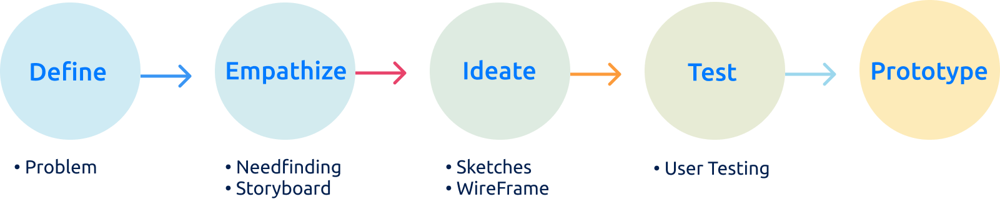

FitBuddy
A moblie fitness app to join with friends and get stronger together

Overview
Have you ever made a new year resolution to get fit but stopped going to the gym after the second day?
FitBuddy was designed to help you plan your next workout with your friends so you can both stay on top of your fitness game! You can schedule a workout on your own OR choose to tag along with your friend’s upcoming workout. By checking in to different workout studios, you can even earn rewards like gym bags and water bottles.
check out the moblie website -> here
Objective
Develop a prototype of a fitness app that will facilitate users to achieve and maintain their fitness goals through the quantified self.
We know from experience that life gets hectic and fitness can become inconvenient and frustrating at times. Ultimately, many people quit before reaching their fitness goals from the absence of accountability and support. Our team wanted to design Fitbuddy as a way to encourage users to workout more consistently and stay goal oriented through self-tracking and social centered designs.
Design Process

Needfinding
To understand our user needs better, our team conducted user interviews with three students about their fitness habits. We identified three main takeways:
- The majority of them often stopped going to the gym after a couple of weeks
- Workouts can often become monotonous and tedious
- Mentioned that if they had friends that supported and came along for their workouts then they would go more frequently, especially those who were still new to gyming.
This presented an opportunity for us to design FitBuddy for those who needed an extra push to stay active.
Storyboard
To help us visualize our user flow, each team member created a storyboard of a user's experience flow with the product over time

In each of our storyboards, we envisioned characters eager to improve their workout habits, but are too intimidated to work out alone. To motivate themselves, they request the help of their friends who introduce them to an app that allow the characters to schedule and join group workouts with their friends.
Through this process, we recognized our potential user base utilizing FitBuddy as a social and supportive platform to encourage users to reach their fitness goals.
Sketches
Using the information from our user research and storyboards, the team quickly sketched out designs that would best represent our vision of the product. Afterwards, each person presented and justified their ideas which lead to our team discussing the different strengths and weakness of our sketches. To narrow our designs, two of our sketches were combined into one and the team ended up with two distinct approaches to our core functionality.

To further develop and test our paper prototype, the two versions were individually tested with users through a heuristic evaluation. From these session, we found general painpoints between the two prototypes that helped us solidfy how our team should iterate and merge our ideas on the next rendition of the prototype.
WireFrames
After collectively identifying the key features from paper prototype A and B, our team was able to narrow down our paper prototypes into one. We decide to focusing on improving Prototype A's more social and rewarding features and incorporating the most advantageous tracking features from Prototype B into a wireframe.
Our core interaction focuses on designs that enable users to log and measure their workout activity alongside their friends by adding workouts to their schedules and joining others through the homepage. The navigation bar then leads users to the collections page, providing a variety of workouts and recipes for users to explore and use. The rewards page incentivizes users to experiment with different activities in exchange for points that can be redeemed for prizes.
User Testing
To justify our research and further develop our application, we chose to get evaluated by three users from our user base who vary in physical activity levels, a fitness rookie, enthusiast, and a competitive athlete. Each user was given specific directions to schedule a new workout and search for information on their body composition.
Kalvin - Fitness Rookie
A 3rd year Biology Student at UC San Diego, he recently started his fitness journey with his friends through SnapChat (Messaging App) by sending photos of their progress.
Findings based on our user testing with Kavlin:
After conducting user testing, Kalvin liked and stressed the importance of viewing his friends' activity and schedule which he believed would motivate him to go more frequently to the gym. Another aspect that Kalvin liked was the idea of earning rewards, although was weary of the idea of rankings, which could inherently make people feel less inclined to join.
Bernice - Fitness Enthusiast
A 4th year pre-PA student at UC San Diego. Between working part time and taking on a heavy course load, Bernice is extremely busy but she will still find time to enjoy a good workout.
Findings based on our user testing with Bernice:
Prior to conducting user testing on Bernice, we added an additional feature which allows the user the option to join their friends workout. After Bernice had completed the first task she was interested in clicking on the button to join a friend’s workout. This functionality improves the user’s experience because it creates an interaction between users. Instead of just being able to view their friends’ workouts the user can now take action and join them.
Taly - Competitive Athlete
A 4th year cognitive science student at UC San Diego who works out at least four times a week. As a competitive person, Taly loves talking about fitness and constantly compares the different workouts, studios, and instructors with her friends.
Findings based on our user testing with Bernice:
This user testing on Taly proved our hypothesis that seeing friends’ workout plans motivate users with competitive nature to be more active as well. However, Taly also told us that our competitor ClassPass has just updated their app a few days ago to include friends’ feed as well. But she said she liked that we use points to quantify users’ fitness journey. However, Taly also tells us that not everyone is competitive like her and sometimes seeing other people excelling might discourage beginners to get started, which is something we will keep in mind and modify in our next stage.
User Testing Results
Common Patterns from all three users:
- Difficulties with setting the date & time: minor bugs on mobile devices and “computer language” format.
- Users tend to go through all the information on each page first before performing the task. This could mean that they are interested in exploring our app, and this could also imply that we need to make the key features stand out more to save the user’s browsing time.
- All three users were intrigued by the social feed of their friends’ activities, especially after we added the new feature to join someone else’s workout.
Overall, the user testing session provided us with insightful feedback, using the patterns we found to continue developing its social related features and improving usability to attract potential users.